A história do SEMAF
Com mais de duas décadas de dedicação à comunidade fidelense, o SEMAF - Serviços Funerários e Assistência Familiar é referência em assistência familiar e serviços funerários em São Fidélis e região. Fundado com o compromisso de oferecer amparo e respeito às famílias nos momentos mais delicados, o SEMAF se consolidou como uma empresa séria, humana e inovadora.
Ao longo dos seus 24 anos de atuação, o SEMAF ampliou sua estrutura e serviços, sempre com foco na qualidade e na dignidade. Em 2023, a empresa lançou o plano Eternal Pets, um serviço especializado de cremação de animais de estimação, reafirmando seu compromisso com o cuidado e a preservação ambiental.
No mesmo ano, o SEMAF deu mais um passo ao conquistar a autorização do Instituto Estadual do Ambiente (Inea) para a instalação do primeiro crematório humano da região Norte e Noroeste Fluminense. Essa conquista coloca São Fidélis como referência em modernidade e respeito às escolhas das famílias no momento da despedida.
No SEMAF, acolhimento, ética e inovação caminham juntos para oferecer um atendimento humanizado, completo e de confiança. Estamos aqui para cuidar de você e da sua família — sempre.
Os Nossos Serviços:
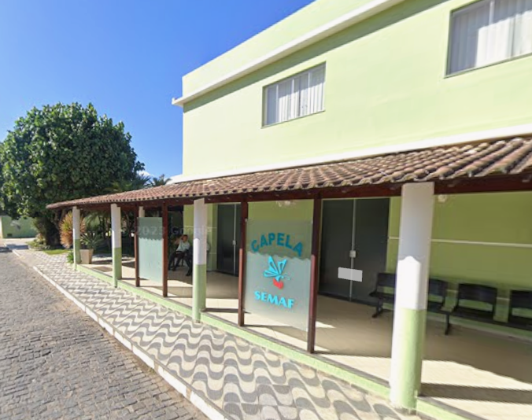
Serviços Funerários
Oferecemos serviços funerários completos com respeito e dignidade
Saiba mais...
No SEMAF, oferecemos serviços funerários completos que incluem 04 salas velatórias amplas, climatizadas, que atendem 24h, com a preparação do corpo, fornecimento de urnas, flores, transporte fúnebre e documentação necessária. Nossa equipe experiente e atenciosa garante que cada pessoa seja homenageada com respeito, dignidade e todo o cuidado que merece. Estamos ao lado das famílias em todos os momentos, oferecendo suporte e acolhimento.
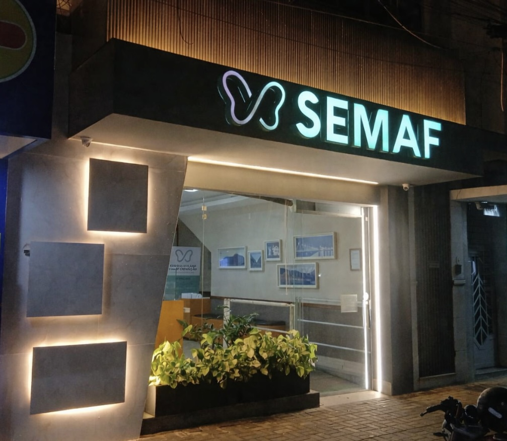
Sede Central - Atendimento Integral
Centro de atendimento com serviços médicos, odontológicos e administrativos
Saiba mais...
Nossa sede central, localizada na Avenida 7 de Setembro, 172, no centro de São Fidélis, é um espaço completo de atendimento aos associados e à comunidade. Aqui você encontra atendimento para pagamento e recebimento de carnês mensais, além de consultórios médicos e odontológicos com profissionais qualificados e parceiros do SEMAF. Oferecemos um ambiente acolhedor e estruturado para atender todas as suas necessidades com conforto e praticidade. Nossa equipe está pronta para recebê-lo de segunda a sexta-feira, das 8h às 17h, e aos sábados das 8h às 12h, sempre com atenção e respeito.
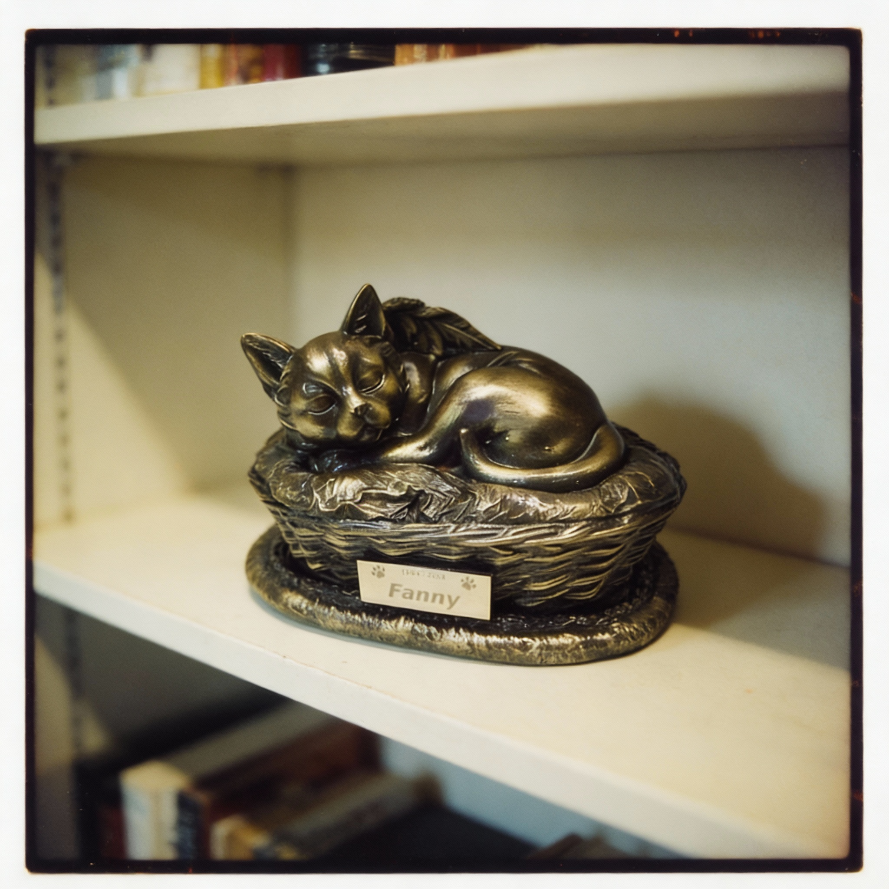
Crematório de pet
Serviço especializado de cremação para animais de estimação
Saiba mais...
O plano Eternal Pets do SEMAF oferece um serviço especializado de cremação individual para animais de estimação, realizado com todo carinho e respeito. Entregamos as cinzas em urna personalizada e certificado de cremação. Este serviço reafirma nosso compromisso com o cuidado, a preservação ambiental e o respeito pelo vínculo entre famílias e seus pets, oferecendo uma despedida digna e amorosa.
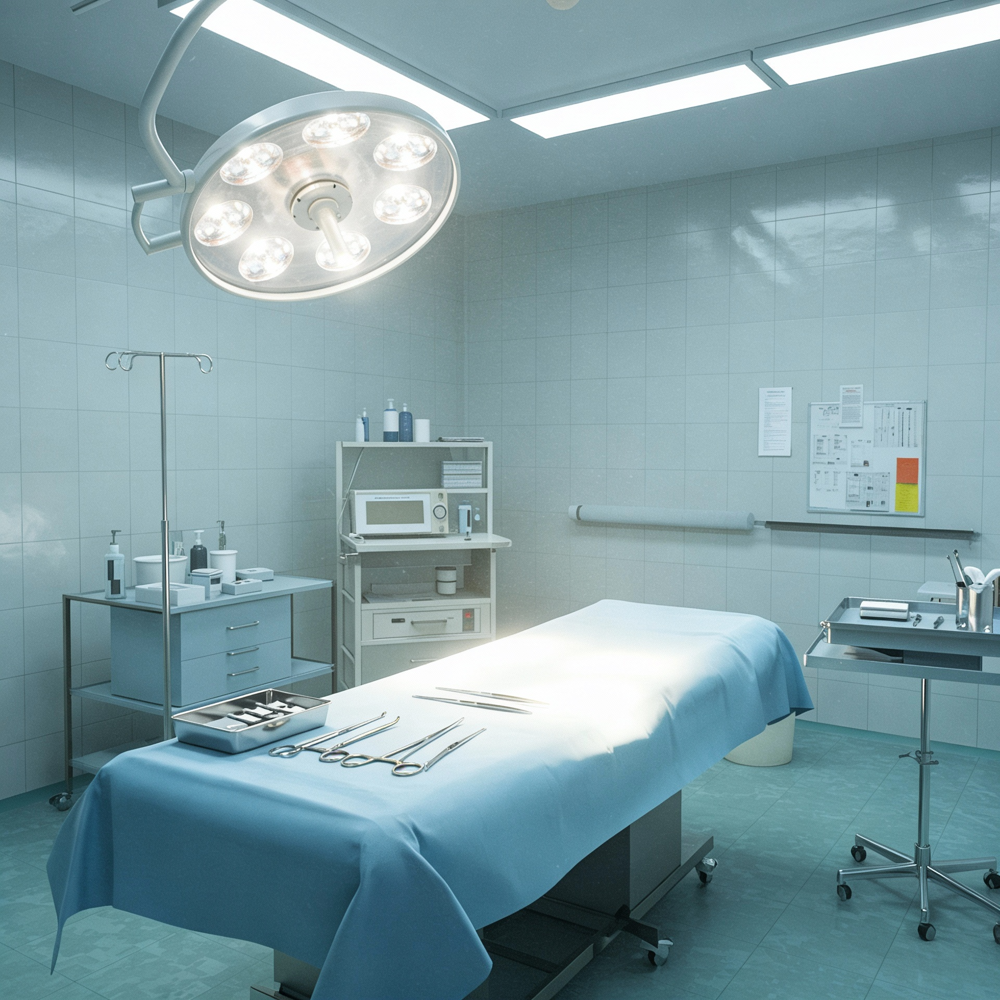
Tanatopraxia
Técnica especializada de preparação e conservação do corpo
Saiba mais...
A tanatopraxia é a técnica profissional de higienizar, conservar e preparar esteticamente o corpo do falecido. Nossos especialistas realizam este serviço com máximo respeito, proporcionando uma apresentação digna e serena, permitindo que a pessoa seja velada com dignidade e oferecendo às famílias uma imagem mais próxima e pacífica de seu ente querido. Este cuidado especial traz conforto nos momentos de despedida.
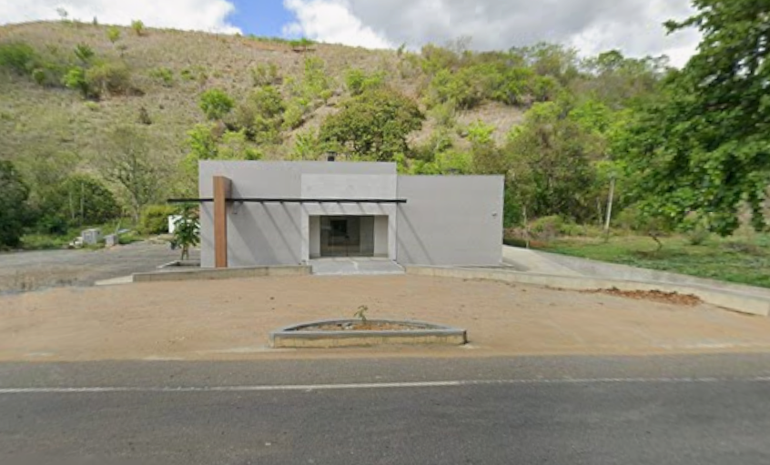
Crematório Humano
Crematório da região Norte e Noroeste Fluminense
Saiba mais...
O SEMAF conquistou a autorização do Instituto Estadual do Ambiente (Inea) para a instalação do primeiro crematório humano da região Norte e Noroeste Fluminense. Este serviço moderno e respeitoso oferece às famílias uma alternativa digna e ecologicamente sustentável. O processo de cremação é realizado com total respeito, seguindo todas as normas ambientais e sanitárias, e as cinzas são entregues em urna de qualidade com certificado. Esta conquista coloca São Fidélis como referência em modernidade e respeito às escolhas das famílias.

Frota de Veículos
Transporte dedicado e respeitoso em todos os momentos
Saiba mais...
O SEMAF conta com uma frota moderna e completa de veículos especializados para atender com dignidade e respeito todas as necessidades de transporte. Nossa frota inclui veículos fúnebres equipados e climatizados, garantindo o transporte adequado e seguro. Todos os nossos veículos são mantidos em excelente estado de conservação e higienização, seguindo rigorosos padrões de qualidade. Estamos prontos para atender 24 horas por dia, 7 dias por semana, oferecendo todo o suporte necessário às famílias.
Alguns dos equipamentos que disponibilizamos para aluguéis e vendas:
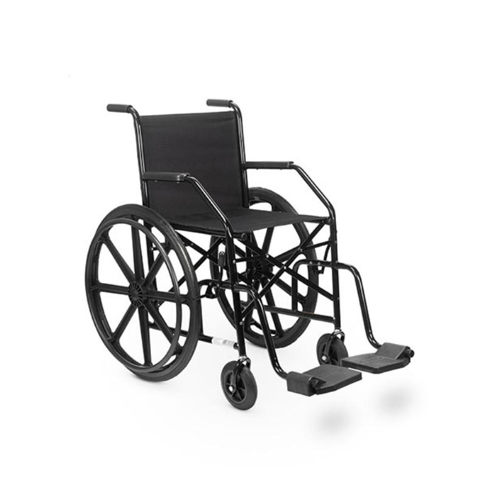
Cadeira de rodas
Aluguel de cadeiras de rodas para a comunidade
Saiba mais...
O SEMAF disponibiliza cadeiras de rodas para aluguéis e vendas com preços acessíveis à comunidade de São Fidélis. Este serviço visa auxiliar pessoas com mobilidade reduzida, seja temporária ou permanente, garantindo acesso a equipamentos de qualidade.
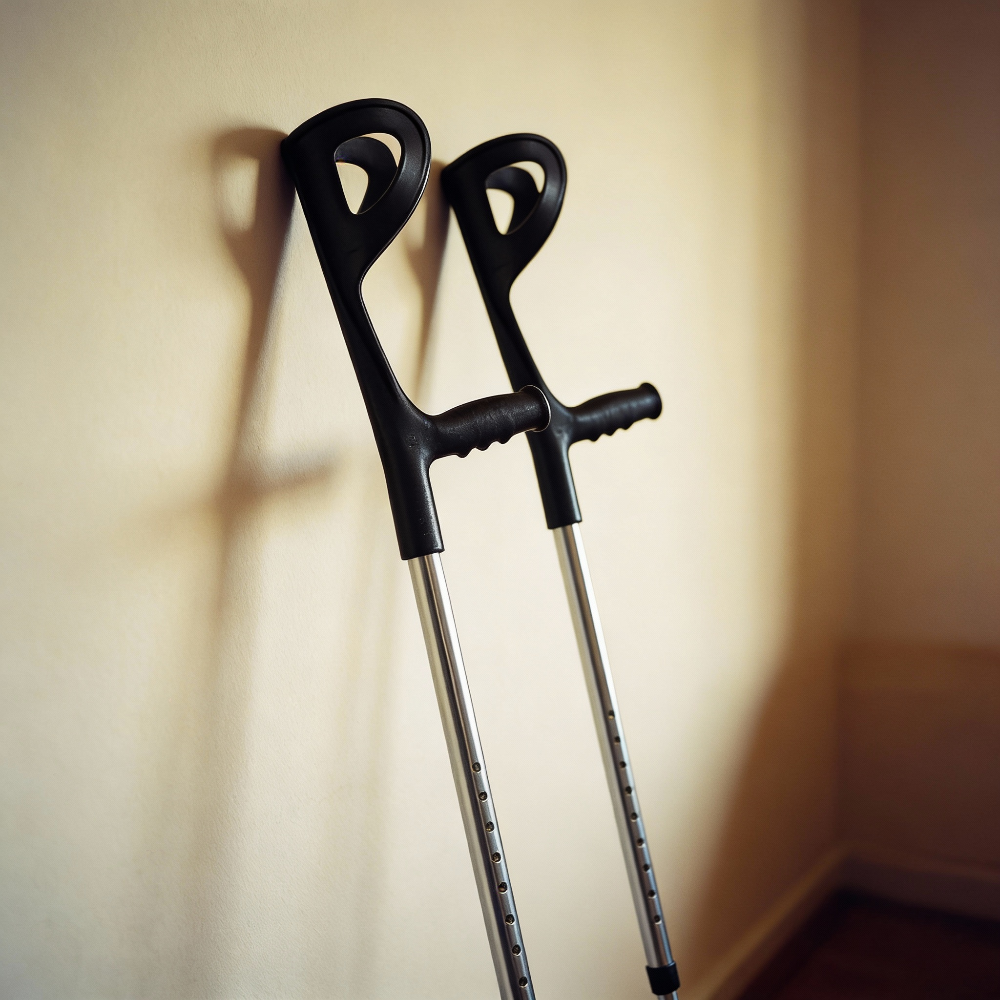
Muletas
Muletas ortopédicas disponíveis para aluguel e venda
Saiba mais...
Oferecemos muletas ortopédicas de diversos tamanhos para aluguéis e vendas com preços acessíveis à comunidade. Ideais para recuperação de cirurgias, tratamento de fraturas ou lesões temporárias. Nosso estoque é higienizado e mantido em perfeito estado de conservação para garantir segurança e conforto aos usuários.

Meias de Compressão
Meias de compressão para tratamento vascular
Saiba mais...
Dispomos de meias de compressão elástica de diversos tamanhos, indicadas para tratamento de problemas venosos, recuperação pós-cirúrgica e prevenção de trombose. Disponíveis para vendas mediante orientação médica.

Talas Ortopédicas
Talas para imobilização e recuperação
Saiba mais...
Talas ortopédicas para imobilização de membros, auxiliando na recuperação de fraturas, entorses e lesões. Disponíveis em diversos tamanhos para braços, pulsos, pernas e tornozelos. Serviço de vendas para a comunidade, com descontos especiais para Associados SEMAF.

Tipoias
Tipoias para sustentação de membros superiores
Saiba mais...
Tipoias confortáveis e ajustáveis para sustentação e imobilização de braços e ombros durante recuperação de lesões ou cirurgias. Material de qualidade que proporciona conforto e segurança ao paciente. Serviço de vendas para a comunidade, com descontos especiais para Associados SEMAF.

Andadores
Andadores para auxiliar na mobilidade e equilíbrio
Saiba mais...
Andadores ortopédicos que proporcionam apoio e segurança para pessoas com dificuldades de locomoção. Ideais para idosos, pacientes em recuperação ou pessoas com mobilidade reduzida. Disponíveis em diferentes modelos. Serviço de vendas e aluguéis para a comunidade, com descontos especiais para Associados SEMAF.

Coletes Ortopédicos
Coletes para suporte e correção postural
Saiba mais...
Coletes ortopédicos para suporte da coluna vertebral, indicados para tratamento de lesões, recuperação pós-operatória ou correção postural. Disponíveis em vários tamanhos mediante apresentação de prescrição médica. Serviço de vendas para a comunidade, com descontos especiais para Associados SEMAF.
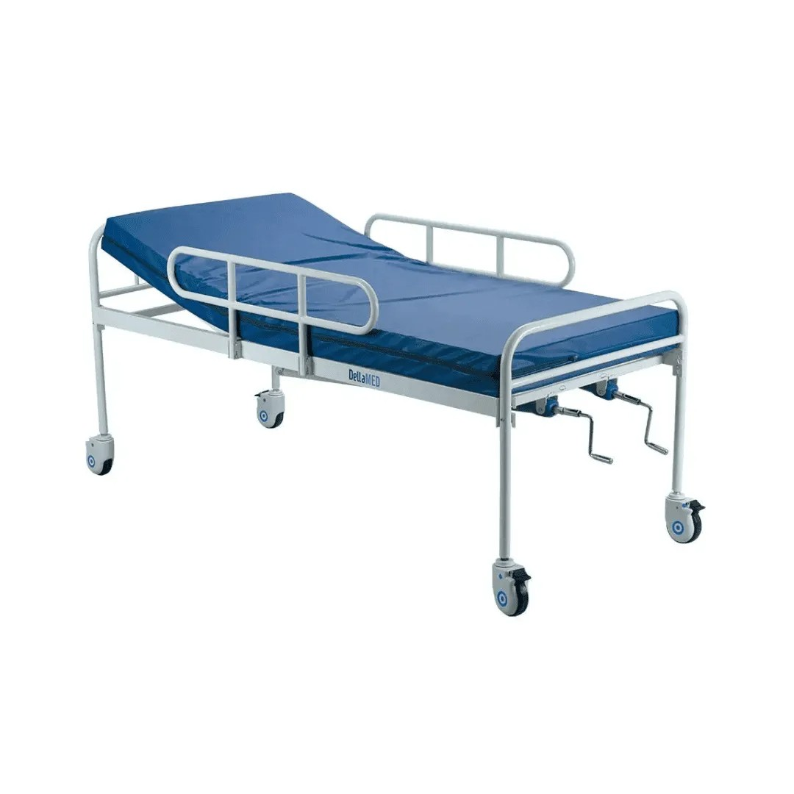
Cama Hospitalar
Cama hospitalar para repouso e recuperação
Saiba mais...
Cama hospitalar, manual, ideal para pacientes acamados e em fase de recuperação. Disponibilizamos aluguel e venda com preços acessíveis à comunidade. Os equipamentos são higienizados e mantidos em perfeito estado de conservação.
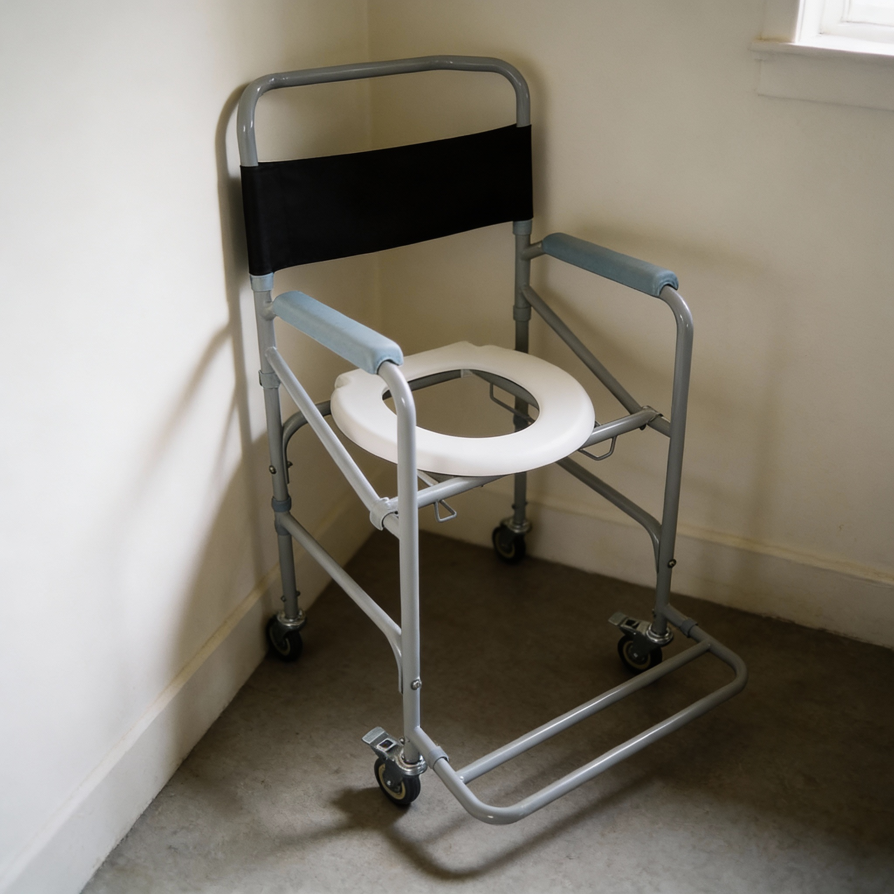
Cadeira Higiênica
Cadeira higiênica com rodas para banho e higiene
Saiba mais...
Cadeira higiênica com rodas, ideal para facilitar o banho e higiene de pessoas com mobilidade reduzida. Equipamento resistente, seguro e confortável, com estrutura em alumínio e assento sanitário. Disponível para aluguéis e vendas com preços acessíveis à comunidade. Os equipamentos são higienizados e mantidos em perfeito estado de conservação.
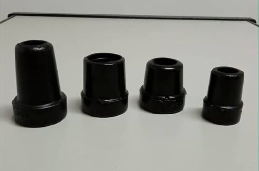
Ponteiras para Muletas e Andadores
Ponteiras de reposição para muletas e andadores
Saiba mais...
Ponteiras de borracha antiderrapante para muletas e andadores, essenciais para garantir segurança e estabilidade durante a locomoção. Disponíveis em diversos tamanhos e modelos compatíveis com diferentes tipos de muletas e andadores. Material de alta qualidade e resistente ao desgaste. Serviço de vendas para a comunidade, com descontos especiais para Associados SEMAF.
Cadeira de rodas
Aluguel de cadeiras de rodas para a comunidade
Saiba mais...
O SEMAF disponibiliza cadeiras de rodas para aluguéis e venda com preços acessíveis à comunidade de São Fidélis. Este serviço social visa auxiliar pessoas com mobilidade reduzida, seja temporária ou permanente, garantindo acesso a equipamentos de qualidade. Basta comparecer à nossa sede com documento de identificação para realizar o cadastro.
Muletas
Muletas ortopédicas disponíveis para aluguel e venda
Saiba mais...
Oferecemos muletas ortopédicas de diversos tamanhos para aluguéis e venda com preços acessíveis à comunidade. Ideais para recuperação de cirurgias, tratamento de fraturas ou lesões temporárias. Nosso estoque é higienizado e mantido em perfeito estado de conservação para garantir segurança e conforto aos usuários.
Meias de Compressão
Meias de compressão para tratamento vascular
Saiba mais...
Dispomos de meias de compressão elástica de diversos tamanhos, indicadas para tratamento de problemas venosos, recuperação pós-cirúrgica e prevenção de trombose. Disponíveis para vendas mediante orientação médica.
Talas Ortopédicas
Talas para imobilização e recuperação
Saiba mais...
Talas ortopédicas para imobilização de membros, auxiliando na recuperação de fraturas, entorses e lesões. Disponíveis em diversos tamanhos para braços, pulsos, pernas e tornozelos. Serviço de vendas para a comunidade, com descontos especiais para Associados SEMAF.
Tipoias
Tipoias para sustentação de membros superiores
Saiba mais...
Tipoias confortáveis e ajustáveis para sustentação e imobilização de braços e ombros durante recuperação de lesões ou cirurgias. Material de qualidade que proporciona conforto e segurança ao paciente. Serviço de vendas para a comunidade, com descontos especiais para Associados SEMAF.
Andadores
Andadores para auxiliar na mobilidade e equilíbrio
Saiba mais...
Andadores ortopédicos que proporcionam apoio e segurança para pessoas com dificuldades de locomoção. Ideais para idosos, pacientes em recuperação ou pessoas com mobilidade reduzida. Disponíveis em diferentes modelos. Serviço de vendas e aluguéis para a comunidade, com descontos especiais para Associados SEMAF.
Coletes Ortopédicos
Coletes para suporte e correção postural
Saiba mais...
Coletes ortopédicos para suporte da coluna vertebral, indicados para tratamento de lesões, recuperação pós-operatória ou correção postural. Disponíveis em vários tamanhos mediante apresentação de prescrição médica. Serviço de vendas para a comunidade, com descontos especiais para Associados SEMAF.
Cama Hospitalar
Cama hospitalar para repouso e recuperação
Saiba mais...
Cama hospitalar manual, ideal para pacientes acamados e em fase de recuperação. Disponibilizamos aluguel com preços acessíveis à comunidade. Os equipamentos são higienizados e mantidos em perfeito estado de conservação. Serviço de aluguel para a comunidade, com descontos especiais para Associados SEMAF.

Cadeira Higiênica
Cadeira higiênica com rodas para banho e higiene
Saiba mais...
Cadeira higiênica com rodas, ideal para facilitar o banho e higiene de pessoas com mobilidade reduzida. Equipamento resistente, seguro e confortável, com estrutura em alumínio e assento sanitário. Disponível para aluguel e venda com preços acessíveis à comunidade. Os equipamentos são higienizados e mantidos em perfeito estado de conservação.
Ponteiras para Muletas e Andadores
Ponteiras de reposição para muletas e andadores
Saiba mais...
Ponteiras de borracha antiderrapante para muletas e andadores, essenciais para garantir segurança e estabilidade durante a locomoção. Disponíveis em diversos tamanhos e modelos compatíveis com diferentes tipos de muletas e andadores. Material de alta qualidade e resistente ao desgaste. Serviço de vendas para a comunidade, com descontos especiais para Associados SEMAF.
Profissionais Parceiros
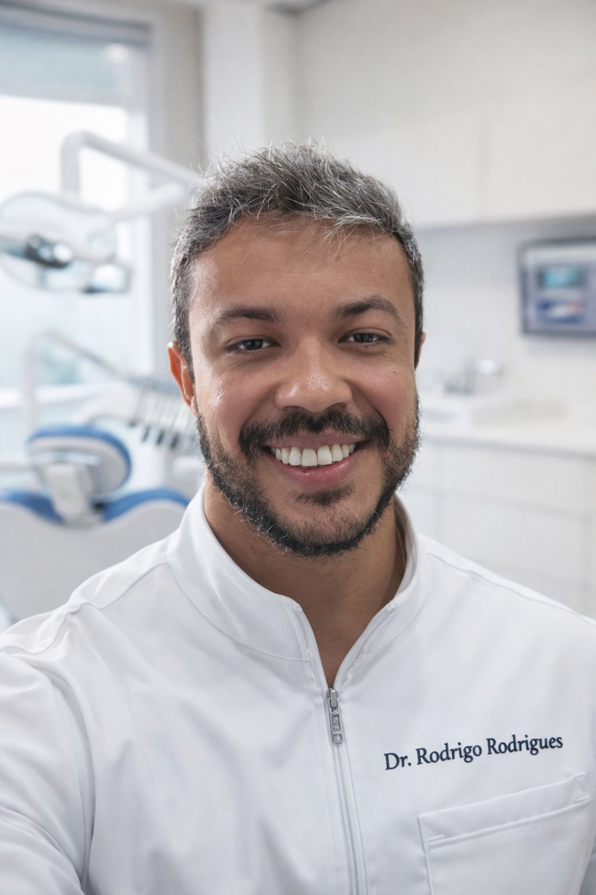
Rodrigo Rodrigues
Cirurgião dentista
- Clareamento
- Restauração
- Limpeza
- Prótese
- Ortodontia

Dr. José Correa
Ginecologia
Atendimento: Quarta | Horário: A partir de 12h
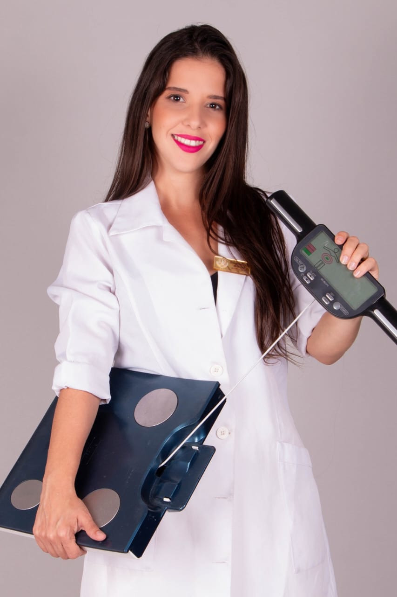
Moniêlen Mathias
Nutricionista
- Pós graduada em nutrição aplicada a estética
- Pós-graduada em fitoterapia e prescrição de fitoterápicos
- Emagrecimento (com + 1K eliminados)
Dr. Jeferson Fialho
Otorrino ou Clínico Geral
Atendimento: Sexta | Horário: A partir de 11h
Dr. Igor Almeida
Psiquiatra
Atendimento: Quinta | Horário: Tarde
Elisângela Keirsbaumer
Psicanalista Clínica
- Terapia Individual
- Terapia Familiar
- Terapia de Casal
- Análise Corporal
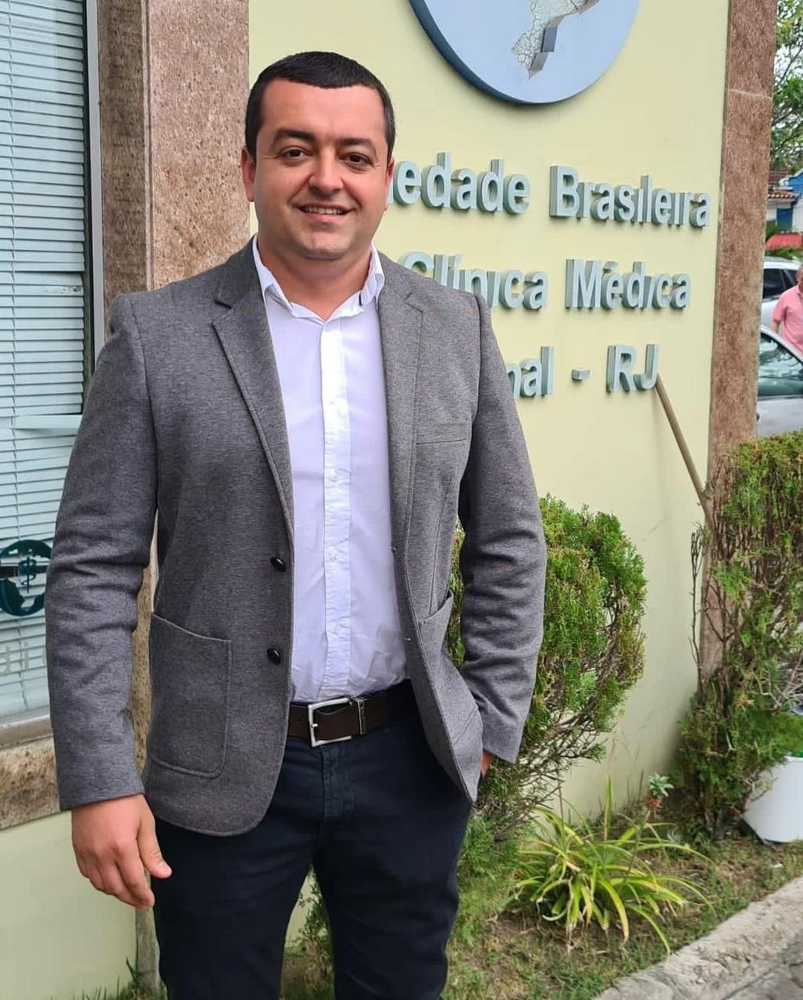
Dr. Antônio Rodrigo
Cardiologia e Clínica Médica
- Atendimento: Segundas-feiras a partir das 14h
- Endereço: Avenida 7-7, 172 - Centro, São Fidélis
Rodrigo Rodrigues
Cirurgião dentista
- Clareamento
- Restauração
- Limpeza
- Prótese
- Ortodontia
Dr. José Correa
Ginecologia
Atendimento: Quarta | Horário: A partir de 12h
Moniêlen Mathias
Nutricionista
- Pós graduada em nutrição aplicada a estética
- Pós-graduada em fitoterapia e prescrição de fitoterápicos
- Emagrecimento (com + 1K eliminados)
Dr. Jeferson Fialho
Otorrino ou Clínico Geral
Atendimento: Sexta | Horário: A partir de 11h
Dr. Igor Almeida
Psiquiatra
Atendimento: Quinta | Horário: Tarde

Elisângela Keirsbaumer
Psicanalista Clínica
- Terapia Individual
- Terapia Familiar
- Terapia de Casal
- Análise Corporal
Dr. Antônio Rodrigo
Cardiologia e Clínica Médica
- Atendimento: Segundas-feiras a partir das 14h
- Endereço: Avenida 7 de Setembro, 172 - Centro, São Fidélis
Nossas Localizações
Unidade Principal - Centro
SEMAF - Sede
Endereço: Av. Sete de Setembro, 172 - Centro, São Fidélis, RJ
Telefone: (22) 98822-5372
Horário: Segunda a Sexta, 8h às 17h
acesse o mapaUnidade Crematório
Unidade- Capela Velatoria
SEMAF CAPELA VELATORIA
Endereço: Centro / Avenida Presidente John Kennedy
Telefone: (22) 98822-5372
Horário: atendimento 24h
acesse o mapaUnidade Pureza
SEMAF - Pureza
Endereço: Próximo à Ponte de Pureza
Localidade: Pureza, Distrito de São Fidélis, RJ
Telefone: (22) 98822-5372
acesse mapa